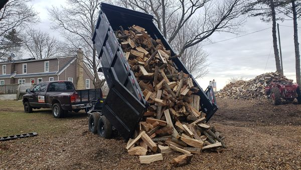
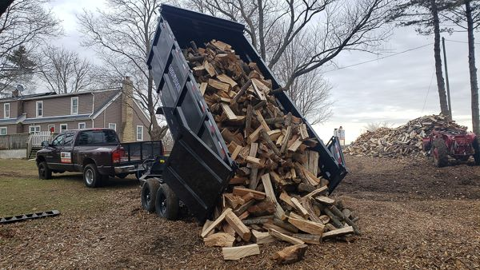

History of Easy Eddy's Tree Service
2014
In the fall of 2014, Easy Eddy's was conceived as a simple firewood business. I would cut fallen trees on people's properties in the Rockford and Loves Park area for no charge, then I would split the wood with a maul and sell it by the facecord.
2015-2016
Over the next three years, I continued to sell firewood and began charging a small fee for tree removals. During this time I was working a regular job in machining, but I married my wife Taylor and had a continued need for additional income. Cutting trees down became a great passion of mine as I gradually accumulated the equipment and experience necessary to apply more skilled techniques to the falling process.
2017
In 2017 I purchased my first F-150, and began doing full tree removals in Rockford and surrounding areas including Cherry Valley, Machesney Park, Roscoe, Caledonia, and even Beloit. In the fall of that year I finally quit my full time job and struck out with full dedication to my own business, which I licensed as Easy Eddy's Trees. I purchased a million dollars of liability insurance and continued to provide affordable pricing at every quote. Throughout the first warm season in 2018, my business relied upon landscaping and lawn care to bolster sales, but the tree business was clearly the path forward.
2018
I purchased an old F-450 diesel flatbed truck from a landscaper near Poplar grove late in 2018, and was able to relieve my F-150 from many of its extreme duties.... That was one of the best purchases I ever made for Easy Eddy's Trees. The F-150 was not well suited for this kind of heavy load carrying, but I continued to use it with a custom wooden truck bed that I built myself.
2019
Within six months from that time, the frame on my half-ton pickup was broken in half from overloading, and I purchased a more suitable truck for this work, a Ram 3500. In that same period of time, I purchased a Bandit 1290 drum-fed brush chipper and hired an employee to drive the second truck. I had become engaged in more technical jobs and was forming a clearer understanding of safe climbing, rigging, and removals. At that time we were moving and loading all wood and limbs by hand with no machinery to assist.
2020
 

Our need for a dump truck was met by an old Chevy K3500 which was for
sale by another tree company. Up until we purchased that truck, we
unloaded every chunk of wood by hand and every bit of wood chips with
grain shovels. You can imagine the intensity of the labor that was
done on a daily basis.
The business grew quickly as we continued to develop our skill set and
make connections in tree care throughout the Rockford region. The big
block Chevy had a castastrophic drivetrain failure, so I had the dump
bed and hydraulic system installed onto my flatbed F-450. That fall,
Easy Eddy's purchased a dump trailer to haul and dump wood. This was a
great improvement to efficiency and increased our capacity to remove
large trees.
2021
Spring of 2021 was the beginning of a new era as I purchased the Bobcat MT100 mini track loader! These became very exciting times for the business. Now, instead of suffering countless hours of laborious lifting, cutting, throwing, and wheelbarrow pushing, we were able to let a machine handle the heavy work for us! Large trees have become much less of a challenge with the aid of this priceless piece of machinery, which fits through a standard 36-inch gate and is rated to lift and carry 1000 lbs! I also purchased a stump grinder attachment for the Bobcat, sufficient to handle most small and medium stump removal jobs.
There were some serious setbacks in 2021, including the engine failure of our Bandit 1290 chipper. I was forced to purchase another chipper, which is a much safer Morbark M12R that has hydraulic feed rollers and an emergency reverse bar to keep my workers safe during operation. We are now able to feed the wood chipper with the Bobcat, which provides an additional boost in efficiency for tree removals and trimming. Throughout the time that I have been operating as Easy Eddy's Tree Service, I have continued to develop and grow as a tree climber. I have learned to assess trees for certain diseases or conditions that are common to the Northern Illinois region, as well as how to properly prune trees for human safety, local codes, aesthetics, overall health, and longevity.
2022
Easy Eddy's Tree Service is equipped to handle jobs that require complex rigging or integration with crane service. I gained my certification as an arborist with the International Society of Arboriculture in 2022 and am continuing to pursue additional education to further my knowledge of tree health, rigging methods, industry approved practices, and safety measures. Over the winter we also rebuilt the website to improve searchability online and reach the customers who are looking for a company like ours.
2023
The year 2023 started off in February with a massive ice storm that ripped off countless limbs and took down trees all around Winnebago County. We were there through it all, with freezing rain and icy weather not preventing us from serving our customers.In April there was a powerful wind storm that came through the Rockford area, pushing down many trees. We removed trees from the roof of people's homes and cleaned up fallen limbs for a long time after that. Many trees were damaged from this storm but did not fail until some time later. We offer free inspections on trees that are suspected of being compromised, and we always provide a detailed description of the problem if there is one, as well as a recommended treatment plan and risk assessment.
This year we also made a great connection with a contractor who was able to bring our business to the next level by reliably providing stump grinding service as well as contracting highly skilled ground labor and machinery operation. Adrian is the owner of El Toro Stump Grinding and covers the entire Rockford region with affordable and honest stump grinding service. He is pictured here standing with a Husqvarna 3120xp equipped with a 5 foot long bar for large tree removals.